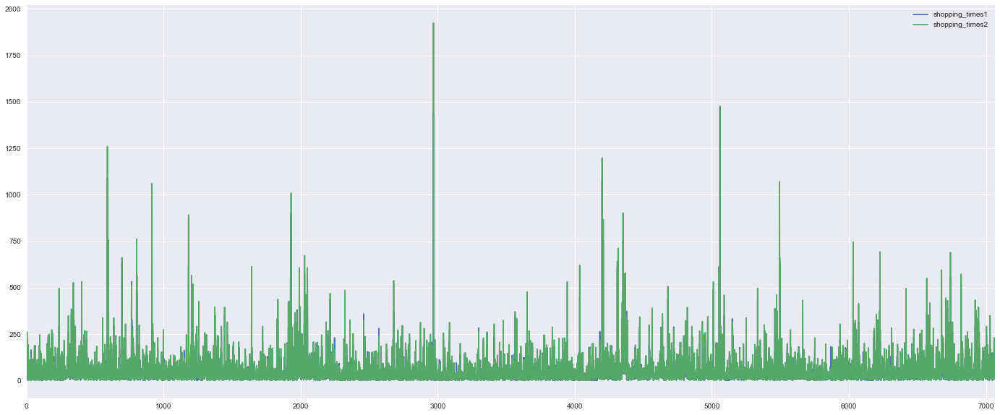

Python 3.6.0 |Anaconda custom (64-bit)| (default, Dec 23 2016, 11:57:41) [MSC v.1900 64 bit (AMD64)]
Type "copyright", "credits" or "license" for more information.
IPython 5.1.0 -- An enhanced Interactive Python.
? -> Introduction and overview of IPython's features.
%quickref -> Quick reference.
help -> Python's own help system.
object? -> Details about 'object', use 'object??' for extra details.
Restarting kernel...
In [1]: runfile('F:/Comptions/TC_comptition/shop_position_com/shop_position/anlysis_data.py', wdir='F:/Comptions/TC_comptition/shop_position_com/shop_position')
....连接shop_info和shop_behavior两个表
In [2]: level1 = shop_behavior[(shop_behavior['time_stamp']<= '2017-08-10 23:50')].groupby(by='shop_id',as_index=False)['wifi_infos'].agg({'shopping_times1':'count'})
...: level2 = shop_behavior[(shop_behavior['time_stamp']> '2017-08-10 23:50') & (shop_behavior['time_stamp']<= '2017-08-21 23:50')].groupby(by='shop_id',as_index=False)['wifi_infos'].agg({'shopping_times2':'count'})
...: level3 = shop_behavior[(shop_behavior['time_stamp']> '2017-08-21 23:50') & (shop_behavior['time_stamp']<= '2017-08-31 23:50')].groupby(by='shop_id',as_index=False)['wifi_infos'].agg({'shopping_times3':'count'})
...:
In [3]: level = pd.merge(level1,level2,on='shop_id',how = 'outer')
In [4]: print('level1:2017-08-01 00:00 ~ 2017-08-10 23:50')
level1:2017-08-01 00:00 ~ 2017-08-10 23:50
In [5]: print('level2:2017-08-11 00:00 ~ 2017-08-21 23:50')
level2:2017-08-11 00:00 ~ 2017-08-21 23:50
In [6]: print('level2:2017-08-21 00:00 ~ 2017-08-31 23:50')
level2:2017-08-21 00:00 ~ 2017-08-31 23:50
In [7]: print('level1与level2中shop_id的差异性：')
...: level.fillna(1000)
...: sn.set_context({"figure.figsize": (24, 10)})
...: sn.barplot(x=level.shop_id,y=level.shopping_times1,color='red')
...: sn.barplot(x=level.shop_id,y=level.shopping_times2,color='blue')
...:
level1与level2中shop_id的差异性：
Traceback (most recent call last):
File "<ipython-input-7-0dfb83668663>", line 4, in <module>
sn.barplot(x=level.shop_id,y=level.shopping_times1,color='red')
File "D:\studySoftware\python\Anacanda3\lib\site-packages\seaborn\categorical.py", line 2904, in barplot
plotter.plot(ax, kwargs)
File "D:\studySoftware\python\Anacanda3\lib\site-packages\seaborn\categorical.py", line 1595, in plot
self.draw_bars(ax, bar_kws)
File "D:\studySoftware\python\Anacanda3\lib\site-packages\seaborn\categorical.py", line 1570, in draw_bars
self.capsize)
File "D:\studySoftware\python\Anacanda3\lib\site-packages\seaborn\categorical.py", line 1517, in draw_confints
ax.plot([at, at], [ci_low, ci_high], color=color, **kws)
File "D:\studySoftware\python\Anacanda3\lib\site-packages\matplotlib\__init__.py", line 1897, in inner
return func(ax, *args, **kwargs)
File "D:\studySoftware\python\Anacanda3\lib\site-packages\matplotlib\axes\_axes.py", line 1410, in plot
self.autoscale_view(scalex=scalex, scaley=scaley)
File "D:\studySoftware\python\Anacanda3\lib\site-packages\matplotlib\axes\_base.py", line 2269, in autoscale_view
if self.get_xscale().lower() == 'log':
KeyboardInterrupt
In [8]: shop_behavior.groupby(by=shop_behavior.index,as_index=False)
Out[8]: <pandas.core.groupby.DataFrameGroupBy object at 0x0000023780784BE0>
In [9]: shop_count = shop_behavior.groupby(by=shop_behavior.index,as_index=False)['shop_id'].agg({'shop_count':'count'})
In [10]: shop_behavior['new_1'] = list(range(1138015))
...: shop_count = shop_behavior.groupby(by=shop_behavior.shop_id,as_index=False)['new_1'].agg({'shop_count':'count'})
...:
In [11]:
...: level1 = shop_behavior[(shop_behavior['time_stamp']<= '2017-08-10 23:50')].groupby(by='shop_id',as_index=False)['new_1'].agg({'shopping_times1':'count'})
...: level2 = shop_behavior[(shop_behavior['time_stamp']> '2017-08-10 23:50') & (shop_behavior['time_stamp']<= '2017-08-21 23:50')].groupby(by='shop_id',as_index=False)['new_1'].agg({'shopping_times2':'count'})
...: level3 = shop_behavior[(shop_behavior['time_stamp']> '2017-08-21 23:50') & (shop_behavior['time_stamp']<= '2017-08-31 23:50')].groupby(by='shop_id',as_index=False)['new_1'].agg({'shopping_times3':'count'})
...:
In [12]: level = pd.merge(level1,level2,on='shop_id',how = 'outer')
In [13]: level4 = shop_behavior[(shop_behavior['time_stamp']<= '2017-08-26 23:50')].groupby(by='shop_id',as_index=False)['new_1'].agg({'shopping_times4':'count'})
...: level5 = shop_behavior[(shop_behavior['time_stamp']> '2017-08-26 23:50')].groupby(by='shop_id',as_index=False)['new_1'].agg({'shopping_times5':'count'})
...:
In [14]: shop_count.plot()
Out[14]: <matplotlib.axes._subplots.AxesSubplot at 0x237807208d0>
In [15]: shop_count.describe()
Out[15]:
shop_count
count 8477.000000
mean 134.247375
std 222.778092
min 1.000000
25% 23.000000
50% 69.000000
75% 156.000000
max 5018.000000
In [16]: level = pd.merge(level1,level2,on='shop_id',how='outer')
In [17]: level = pd.merge(level,level3,on='shop_id',how='outer')
In [18]: level.dropna(inplace=True)
In [19]: sn.barplot(x=level.index,y=level.shopping_times1,color='red')
Traceback (most recent call last):
File "<ipython-input-19-34fd67bca64d>", line 1, in <module>
sn.barplot(x=level.index,y=level.shopping_times1,color='red')
File "D:\studySoftware\python\Anacanda3\lib\site-packages\seaborn\categorical.py", line 2904, in barplot
plotter.plot(ax, kwargs)
File "D:\studySoftware\python\Anacanda3\lib\site-packages\seaborn\categorical.py", line 1595, in plot
self.draw_bars(ax, bar_kws)
File "D:\studySoftware\python\Anacanda3\lib\site-packages\seaborn\categorical.py", line 1570, in draw_bars
self.capsize)
File "D:\studySoftware\python\Anacanda3\lib\site-packages\seaborn\categorical.py", line 1517, in draw_confints
ax.plot([at, at], [ci_low, ci_high], color=color, **kws)
File "D:\studySoftware\python\Anacanda3\lib\site-packages\matplotlib\__init__.py", line 1897, in inner
return func(ax, *args, **kwargs)
File "D:\studySoftware\python\Anacanda3\lib\site-packages\matplotlib\axes\_axes.py", line 1410, in plot
self.autoscale_view(scalex=scalex, scaley=scaley)
File "D:\studySoftware\python\Anacanda3\lib\site-packages\matplotlib\axes\_base.py", line 2269, in autoscale_view
if self.get_xscale().lower() == 'log':
KeyboardInterrupt
In [20]: level.plot(x=level.index,y=level.shopping_times1)
Traceback (most recent call last):
File "<ipython-input-20-9e02efa69c26>", line 1, in <module>
level.plot(x=level.index,y=level.shopping_times1)
File "C:\Users\LiDongNing\AppData\Roaming\Python\Python36\site-packages\pandas\plotting\_core.py", line 2617, in __call__
sort_columns=sort_columns, **kwds)
File "C:\Users\LiDongNing\AppData\Roaming\Python\Python36\site-packages\pandas\plotting\_core.py", line 1859, in plot_frame
**kwds)
File "C:\Users\LiDongNing\AppData\Roaming\Python\Python36\site-packages\pandas\plotting\_core.py", line 1670, in _plot
series = data[y].copy() # Don't modify
File "C:\Users\LiDongNing\AppData\Roaming\Python\Python36\site-packages\pandas\core\frame.py", line 1958, in __getitem__
return self._getitem_array(key)
File "C:\Users\LiDongNing\AppData\Roaming\Python\Python36\site-packages\pandas\core\frame.py", line 2002, in _getitem_array
indexer = self.loc._convert_to_indexer(key, axis=1)
File "C:\Users\LiDongNing\AppData\Roaming\Python\Python36\site-packages\pandas\core\indexing.py", line 1231, in _convert_to_indexer
raise KeyError('%s not in index' % objarr[mask])
KeyError: '[ 2. 14. 78. ..., 69. 13. 134.] not in index'
In [21]: level.plot()
Out[21]: <matplotlib.axes._subplots.AxesSubplot at 0x2379f49ec88>
In [22]: shop_count = shop_behavior.groupby(by=shop_behavior.shop_id,as_index=False)['new_1'].agg({'shop_count':'count'})
In [23]: level_big = pd.merge(shop_count,level4,on = 'shop_id').drop_na()
Traceback (most recent call last):
File "<ipython-input-23-67a7d4e34912>", line 1, in <module>
level_big = pd.merge(shop_count,level4,on = 'shop_id').drop_na()
File "C:\Users\LiDongNing\AppData\Roaming\Python\Python36\site-packages\pandas\core\generic.py", line 3081, in __getattr__
return object.__getattribute__(self, name)
AttributeError: 'DataFrame' object has no attribute 'drop_na'
In [24]: level_big = pd.merge(shop_count,level4,on = 'shop_id')dropna(inplace=True)
File "<ipython-input-24-9eb72ebf3b36>", line 1
level_big = pd.merge(shop_count,level4,on = 'shop_id')dropna(inplace=True)
^
SyntaxError: invalid syntax
In [25]: level_big = pd.merge(shop_count,level4,on = 'shop_id').dropna()
In [26]: level_big.plot()
Out[26]: <matplotlib.axes._subplots.AxesSubplot at 0x2379634bcc0>
In [27]: level = pd.merge(level1,level2,on='shop_id').dropna()
...: level.plot()
...:
Out[27]: <matplotlib.axes._subplots.AxesSubplot at 0x23799c70cf8>

In [28]: level = pd.merge(level2,level3,on='shop_id').dropna()
...: level.plot()
...:
Out[28]: <matplotlib.axes._subplots.AxesSubplot at 0x237998eb390>
In [29]: level = pd.merge(level1,level3,on='shop_id').dropna()
...: level.plot()
...:
Out[29]: <matplotlib.axes._subplots.AxesSubplot at 0x23798aded68>
In [30]: print('分析表明,2017-08-01 00:00 ~ 2017-08-26 23:50 和 2017-08-26 23:50 ~ 2017-08-31 23:50 两个区间的分布比较相似')
分析表明,2017-08-01 00:00 ~ 2017-08-26 23:50 和 2017-08-26 23:50 ~ 2017-08-31 23:50 两个区间的分布比较相似
In [31]: print('月初十天消费记录比月中和月末都要少')
月初十天消费记录比月中和月末都要少
In [32]: level = pd.merge(shop_count,level2,on='shop_id').dropna()
...: level.plot()
...:
Out[32]: <matplotlib.axes._subplots.AxesSubplot at 0x2379c6b1ac8>
In [33]: level = pd.merge(level4,level2,on='shop_id').dropna()
...: level.plot()
...:
Out[33]: <matplotlib.axes._subplots.AxesSubplot at 0x2379e14b9e8>
In [34]: level = pd.merge(level1,level3,on='shop_id').dropna()
...: level['value'] = level.shopping_times1 - level.shopping_times3
...: level.values.describe()
...:
Traceback (most recent call last):
File "<ipython-input-34-6ba37011c9fb>", line 3, in <module>
level.values.describe()
AttributeError: 'numpy.ndarray' object has no attribute 'describe'
In [35]: level = pd.merge(level1,level3,on='shop_id').dropna()
...: level['value'] = level.shopping_times1 - level.shopping_times3
...:
In [36]: level.value.describe()
Out[36]:
count 6937.000000
mean -5.354764
std 20.184686
min -228.000000
25% -11.000000
50% -3.000000
75% 3.000000
max 189.000000
Name: value, dtype: float64
In [37]: level = pd.merge(level1,level2,on='shop_id').dropna()
...: level['value'] = level.shopping_times1 - level.shopping_times2
...:
In [38]: level.value.describe()
Out[38]:
count 7066.000000
mean -10.497028
std 22.455247
min -513.000000
25% -16.000000
50% -6.000000
75% 0.000000
max 131.000000
Name: value, dtype: float64
In [39]: level = pd.merge(level2,level3,on='shop_id').dropna()
...: level['value'] = level.shopping_times2 - level.shopping_times3
...:
In [40]: level.value.describe()
Out[40]:
count 7236.000000
mean 4.745439
std 20.443997
min -339.000000
25% -3.000000
50% 2.000000
75% 11.000000
max 499.000000
Name: value, dtype: float64
In [41]: